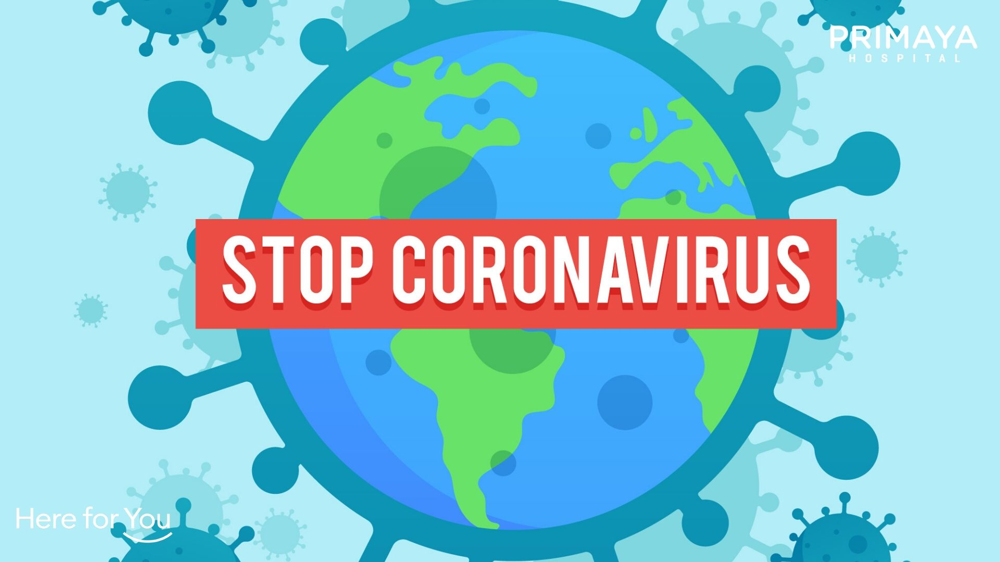
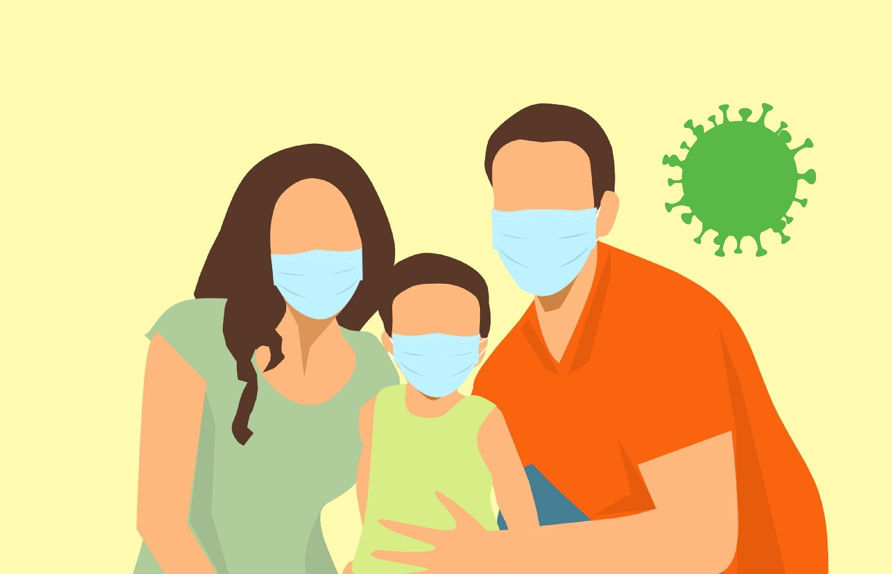

Apa itu covid 19

Laman Organisasi Kesehatan Dunia (WHO) menyebutkan, virus korona SARS (SARS-CoV) yang diidentifikasi
pada 2003 diyakini dari hewan. Sumbernya diperkirakan kelelawar yang menular ke luwak lantas
menginfeksi manusia pertama kali di Provinsi Guangdong, China, pada 2002.
Gejala SARS mirip influenza, seperti demam, menggigil, lemah, nyeri otot, sakit kepala. Batuk
kering, napas pendek, dan diare tampak pada minggu pertama dan kedua, kemudian menjadi parah secara
cepat sehingga perlu perawatan intensif. Penularan virus dari manusia ke manusia lewat percikan
cairan bersin dan batuk serta tinja umumnya terjadi di fasilitas kesehatan. Setelah dilakukan
penerapan pengendalian infeksi yang tepat, akhirnya wabah SARS mereda.
Gelombang wabah virus korona berikutnya adalah Sindrom Pernapasan Timur Tengah (Middle East
respiratory syndrome/MERS). Penyakit yang disebabkan virus MERS‐CoV ini diindetifikasi di Arab Saudi
tahun 2012. Sumber virus ini adalah unta. Belum dipastikan rute penularan dari unta ke manusia. Yang
pasti, wabah terjadi akibat penularan dari manusia ke manusia di fasilitas kesehatan.
Orang yang terinfeksi bisa tanpa gejala, tapi ada yang batuk ringan, demam, napas pendek, hingga
gangguan pernapasan akut parah yang perlu ventilator, bahkan kematian. Diare dan pneumonia juga
dilaporkan.
Virus ini umumnya menyebabkan penyakit parah pada orang lanjut usia, orang dengan kekebalan tubuh
lemah, serta yang memiliki penyakit kronis seperti gangguan ginjal, kanker, gangguan paru, dan
diabetes.
Gejala covid 19

Secara umum, ada 3 gejala umum yang bisa menandakan seseorang terinfeksi virus Corona, yaitu:
Demam (suhu tubuh di atas 38 derajat Celsius)
Batuk kering
Sesak napas
Ada beberapa gejala lain yang juga bisa muncul pada infeksi virus Corona meskipun lebih jarang,
yaitu:
Diare
Sakit kepala
Konjungtivitis
Hilangnya kemampuan mengecap rasa atau mencium bau
Ruam di kulit
Gejala-gejala COVID-19 ini umumnya muncul dalam waktu 2 hari sampai 2 minggu setelah penderita
terpapar virus Corona. Sebagian pasien yang terinfeksi virus Corona bisa mengalami penurunan oksigen
tanpa adanya gejala apapun. Kondisi ini disebut happy hypoxia.
Guna memastikan apakah gejala-gejala tersebut merupakan gejala dari virus Corona, diperlukan rapid
test atau PCR. Untuk menemukan tempat melakukan rapid test atau PCR di sekitar rumah Anda
Pencegahan Covid 19

Sampai saat ini belum ada vaksin untuk mencegah infeksi virus corona. Namun, setidaknya ada beberapa
cara yang bisa dilakukan untuk mengurangi risiko terjangkit virus ini. Berikut upaya yang bisa
dilakukan:
Sering-seringlah mencuci tangan dengan sabun dan air selama 20 detik hingga bersih.
Hindari menyentuh wajah, hidung, atau mulut saat tangan dalam keadaan kotor atau belum dicuci.
Hindari kontak langsung atau berdekatan dengan orang yang sakit.
Hindari menyentuh hewan atau unggas liar.
Membersihkan dan mensterilkan permukaan benda yang sering digunakan.
Tutup hidung dan mulut ketika bersin atau batuk dengan tisu. Kemudian, buanglah tisu dan cuci tangan
hingga bersih.
Jangan keluar rumah dalam keadaan sakit.
Kenakan masker dan segera berobat ke fasilitas kesehatan ketika mengalami gejala penyakit saluran
napas.
Selain itu, kamu juga bisa perkuat sistem kekebalan tubuh dengan konsumsi vitamin dan suplemen
sebagai bentuk pencegahan dari virus ini. Temukan berbagai produk pencegahan Corona